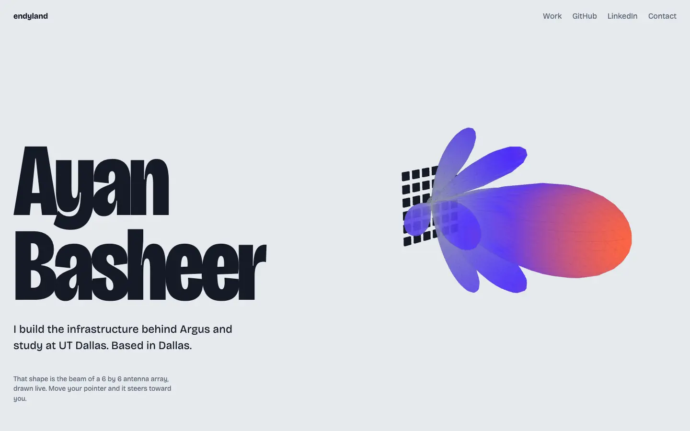

This site
endyland.com
This portfolio. A home page and five tabs, each with its own look, and a live 3D antenna beam.

By the numbers
- 5tabs, each with its own art and motion
- 0build steps
- 36antenna elements in the home page beam
What I did
- Designed and built the site in plain HTML, CSS and JavaScript, with no build step.
- Wrote the home page beam in three.js. It is a 6 by 6 antenna array, and it steers toward your pointer.
- Gave every tab its own art, fonts and motion, with still versions for reduced motion.
- Kept a strict security policy: no inline scripts and no outside script hosts.
- Set up checks and automatic deploys to Cloudflare Pages.